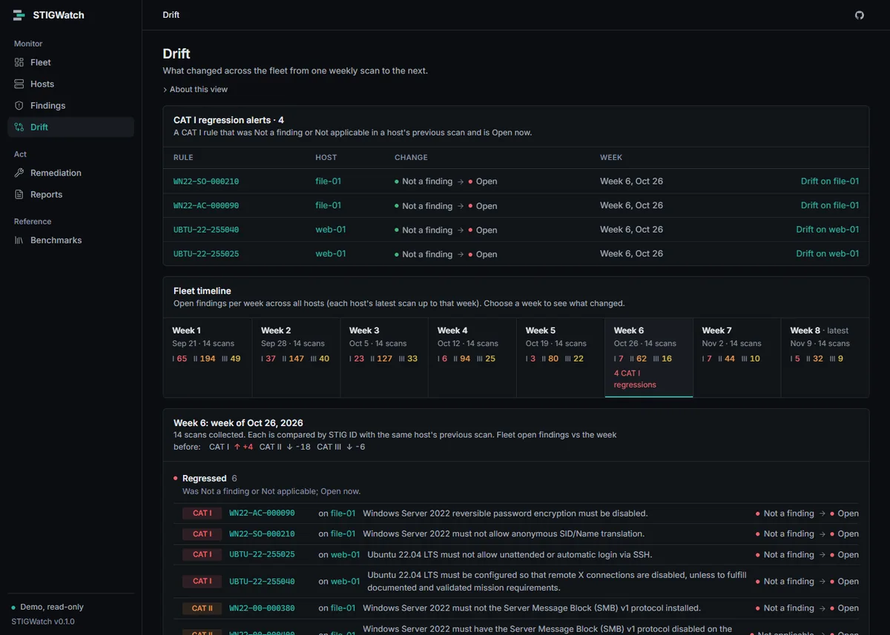
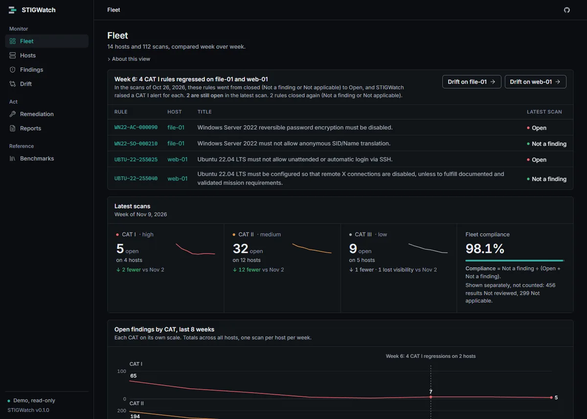
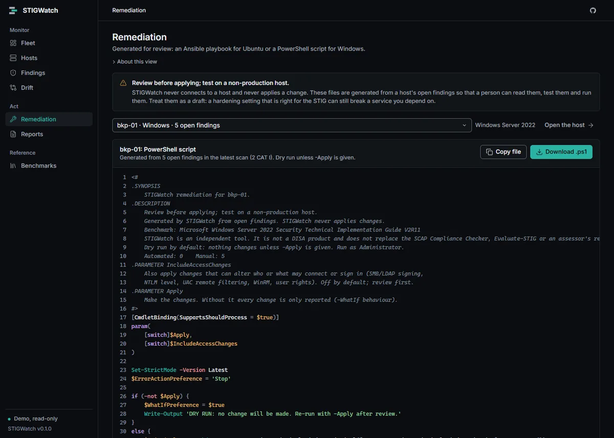

STIGWatch
Summary
STIGWatch is a DISA STIG compliance scanner for Ubuntu 22.04 LTS (STIG V2R10, 191 rules) and Windows Server 2022 (STIG V2R11, 277 rules) that tracks how a fleet changes from one scan to the next. Read-only collectors gather facts from a host, a declarative check engine turns them into per-rule results, and each scan is compared with the host's previous one by STIG ID. A CAT I rule that goes from closed to Open raises an alert. It also generates remediation you review and run yourself, and exports STIG Viewer checklists (CKL and CKLB) and fleet reports.
STIGWatch is an independent tool. It is not a DISA product and does not replace the SCAP Compliance Checker, Evaluate-STIG or an assessor's review.
Problem
DoD systems have to be configured to the STIG for their platform, and each rule carries a severity: CAT I is a vulnerability whose exploitation directly and immediately causes a loss of confidentiality, availability or integrity. A single scan tells you where a host stands today. What a system owner also needs is the change: which settings drifted open since last week, which were fixed, and whether anything serious came back.
That comparison is easy to get wrong. A new benchmark release renumbers and reshuffles rules, a scan without root cannot read half the facts, and a rule that merely became unreadable looks like a rule that was fixed. I wanted a tool that matches rules by STIG ID, never counts lost visibility as a fix, and treats anything it cannot prove as Not Reviewed instead of a pass.
What I built
- Read-only collectors. A POSIX shell script for Ubuntu and a PowerShell 5.1 and 7 script for Windows. Each fact records the command that produced it, a fact that cannot be read is recorded as unavailable, password hashes are never output, and account names can be redacted. The README lists every command each collector runs.
- A declarative check engine. Rules are YAML checks over collector facts. Of the 191 Ubuntu rules, 174 have an automated check; of the 277 Windows rules, 254 do (229 of them can decide a result). The rest are Manual review and show the STIG check text. The coverage table is generated from the engine, and CI fails when it is stale.
- Drift by STIG ID. Between two scans every rule lands in exactly one bucket: regressed, fixed, newly open, lost visibility, other change or unchanged. A rule present in only one benchmark release is listed as new or removed, never as fixed or regressed.
- CAT I regression alerts. A CAT I rule that was Not a Finding or Not Applicable and is Open now raises an alert. Out-of-order uploads are accepted and the alerts around them are recomputed.
- Remediation it never applies. An Ansible playbook for Ubuntu (109 of 191 rules) and a PowerShell script for Windows (150 of 277), generated from each rule's check definition. A rule with any condition lacking a safe mapping is listed as manual. The Windows script is a dry run unless
-Applyis passed, and changes that affect who may connect need-IncludeAccessChangesas well. - Exports. A checklist per scan as
.ckl(STIG Viewer 2 XML) and.cklb(STIG Viewer 3 JSON), plus fleet summaries as CSV and a self-contained HTML report. - Hardening. Uploaded JSON is treated as untrusted (size caps, depth limit, content-type checks), PBKDF2-SHA256 hashes, an httpOnly SameSite=Strict session cookie, a read-only guest mode that refuses writes, a strict Content-Security-Policy and remediation text that is only ever shown as plain text.
How it works
- Collect and upload. The collector writes one JSON file and never connects to STIGWatch. An admin uploads it, and the host is matched by the name in the file or created.
- Evaluate. Checks run over the facts with the statuses STIG Viewer uses: Open, Not a Finding, Not Applicable and Not Reviewed. A rule STIGWatch cannot prove either way is Not Reviewed, never a pass.
- Compare. The scan is compared with the host's previous one by STIG ID. Open to Not Reviewed (for example a collector run without root) is its own bucket, lost visibility, and is never counted as fixed.
- Review and act. Findings are grouped by STIG ID across the fleet, assessors can attach comments that persist across scans, and remediation and checklists are generated for a person to review.
| Benchmark | Rules | Automated checks | Manual review | Generated remediation |
|---|---|---|---|---|
| Ubuntu 22.04 LTS V2R10 | 191 | 174 | 17 | 109 |
| Windows Server 2022 V2R11 | 277 | 254 | 23 | 150 |

Evidence
The demo is a fictional fleet of 14 invented hosts with 8 weekly scans each (112 scans). It is built so that week 6 contains four CAT I regressions across two hosts, and the Fleet page opens on them.
336 backend tests are collected (332 passed and 4 platform-specific skips, with pytest), alongside 29 frontend unit tests and a small Playwright smoke test that checks guests are read-only and that a rule that lost visibility is never shown as fixed. CI runs the backend tests, the benchmark, coverage and demo checks, the frontend tests and build, the smoke test, pip-audit, npm audit and a gitleaks scan. It also runs the real collectors: the Ubuntu one on an ubuntu-22.04 runner, and the Windows one on windows-2022 under both PowerShell 7 and Windows PowerShell 5.1. Generated playbooks go through ansible-playbook --syntax-check and ansible-lint, and generated scripts through the PowerShell parser and a dry run.


-Apply.What I'd do next
- Open the checklists in STIG Viewer. The CKL and CKLB exports follow DISA's published field names and third-party samples, but have not yet been opened in STIG Viewer itself.
- Validate on a real fleet. Checks are validated against GitHub's
ubuntu-22.04andwindows-2022runners and fixtures, not a production fleet. A result is evidence to review, not a verdict. - More coverage. 174 of 191 Ubuntu rules and 254 of 277 Windows rules have a check today, and only two benchmarks are loaded. Newer DISA releases can be imported, but rules they add stay Not Reviewed until a check is written.
- Scale. The Drift and Findings pages load per-host data in the browser, which suits tens of hosts rather than hundreds.